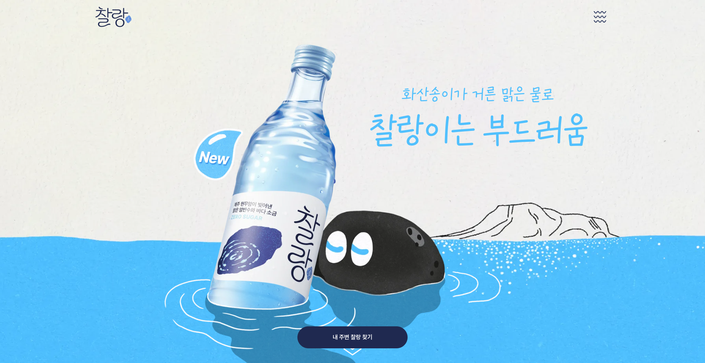
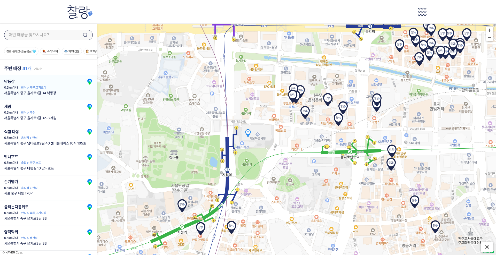
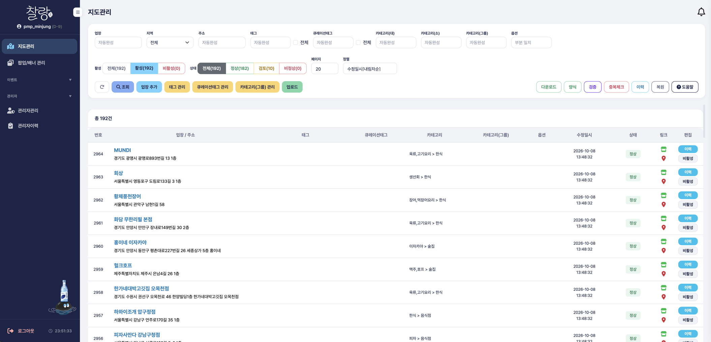
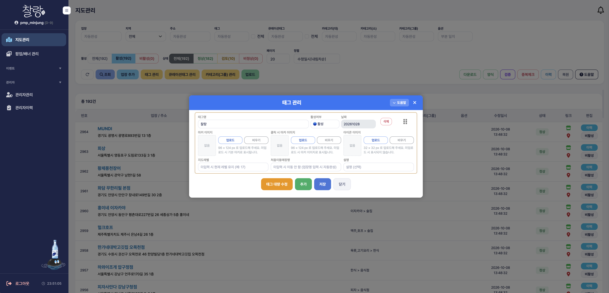
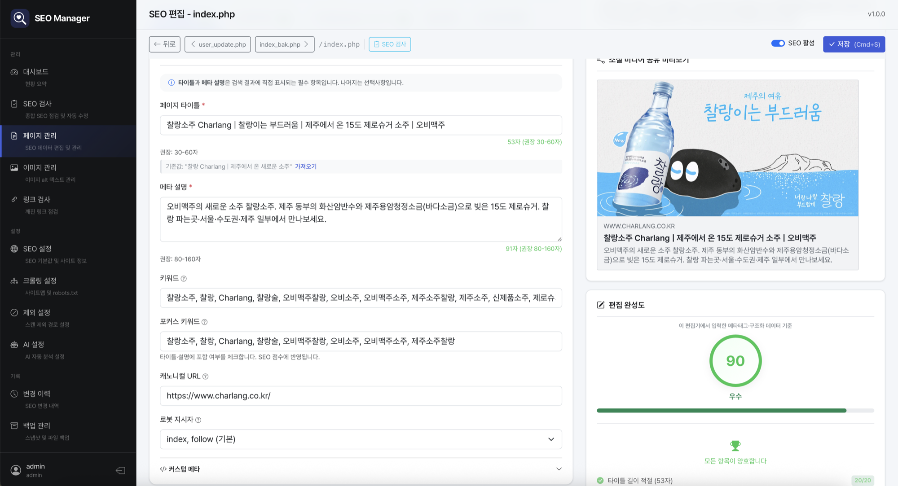
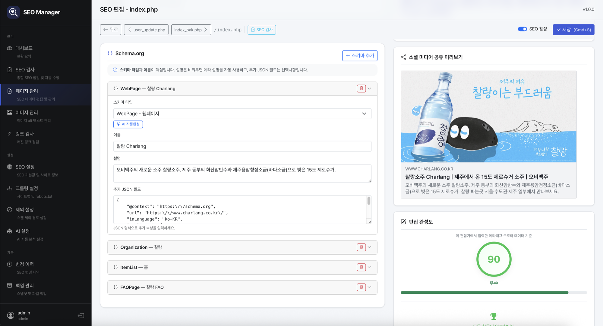
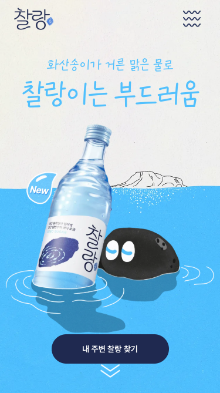
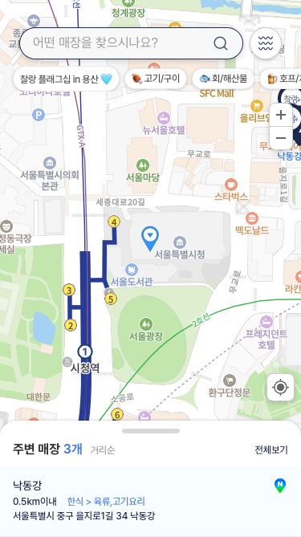

메인
제품 비주얼과 브랜드 메시지를 첫 화면에 두고, '내 주변 찰랑 찾기' 버튼으로 지도까지 바로 이어지도록 구성된 메인 화면입니다.
찰랑 소주 출시에 맞춰 새로 개설한 브랜드 웹사이트입니다. 사이트의 핵심인 '내 주변 찰랑 찾기' 지도를 운영자가 직접 관리할 수 있도록 관리자페이지를 구축했습니다.

제품 비주얼과 브랜드 메시지를 첫 화면에 두고, '내 주변 찰랑 찾기' 버튼으로 지도까지 바로 이어지도록 구성된 메인 화면입니다.

현재 위치 기준으로 찰랑을 판매하는 매장을 지도 마커와 거리순 목록으로 보여주는 화면입니다. 이 화면에 노출되는 마커·팝업·배너·이벤트를 관리자페이지에서 관리합니다.
지도 기능과 데이터 저장은 백엔드 개발자가 담당하였고, 운영자가 개발자 없이 지도 콘텐츠를 직접 관리할 수 있도록 관리자페이지의 UI와 화면 동작(JS)을 구현하였습니다.
태그별로 기본 마커·클릭 시 마커·아이콘 이미지를 등록하고, 지도 레벨과 처음 이동할 매장을 지정할 수 있게 구성했습니다.
사이트에 띄울 팝업과 배너를 등록하고 수정·노출 관리를 할 수 있게 했습니다.
업장·지역·태그·카테고리 조건 검색과 활성·상태 필터로 매장을 관리하고, 업로드·다운로드·검증·중복체크·이력·복원 기능을 갖췄습니다.
지도와 연계된 이벤트를 등록하고 운영 상태를 관리하는 화면을 만들었습니다.
지도관리 목록 화면입니다. 업장·지역·주소·태그·큐레이션태그·카테고리 조건으로 매장을 검색하고, 활성 여부와 정상·검토·비정상 상태로 나눠 확인할 수 있도록 구성하였습니다. 매장 추가, 태그·카테고리 관리, 일괄 업로드·다운로드와 검증·중복체크, 수정 이력 확인 및 복원까지 한 화면에서 처리합니다.

태그 관리 화면입니다. 태그마다 기본 마커, 클릭 시 마커, 아이콘 이미지를 등록하고, 지도 레벨과 처음 이동할 매장을 지정해 지도에 노출되는 방식을 운영자가 직접 설정할 수 있습니다.

SEO Manager에서 페이지별 타이틀 · 메타 설명 · 키워드 · canonical · 로봇 지시자와 구조화 데이터(WebPage · Organization · ItemList · FAQPage)를 입력하고 관리했습니다.


메인과 지도 모두 모바일에 맞춰 대응합니다. 모바일 지도에서는 검색창과 카테고리를 상단에, 매장 목록을 하단 시트로 배치합니다.

